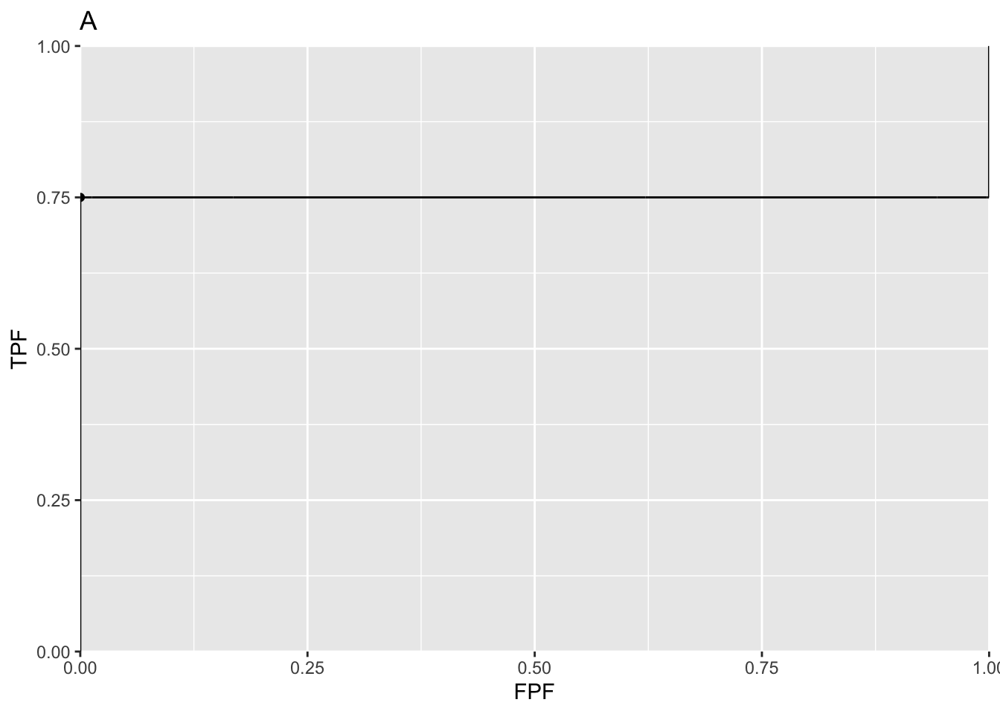
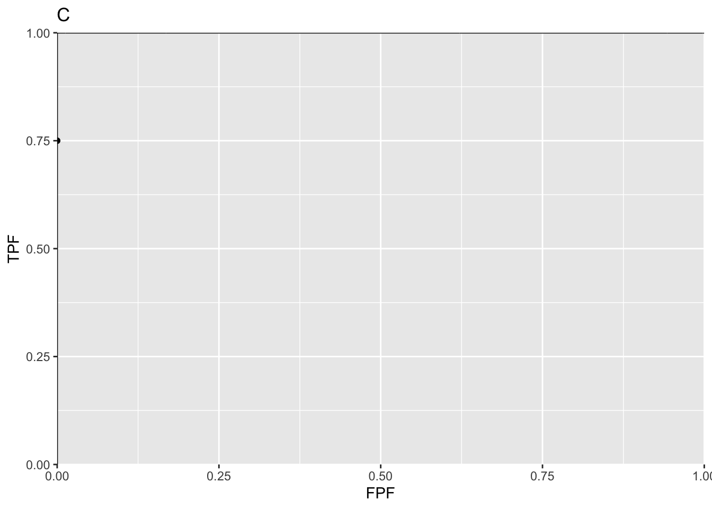
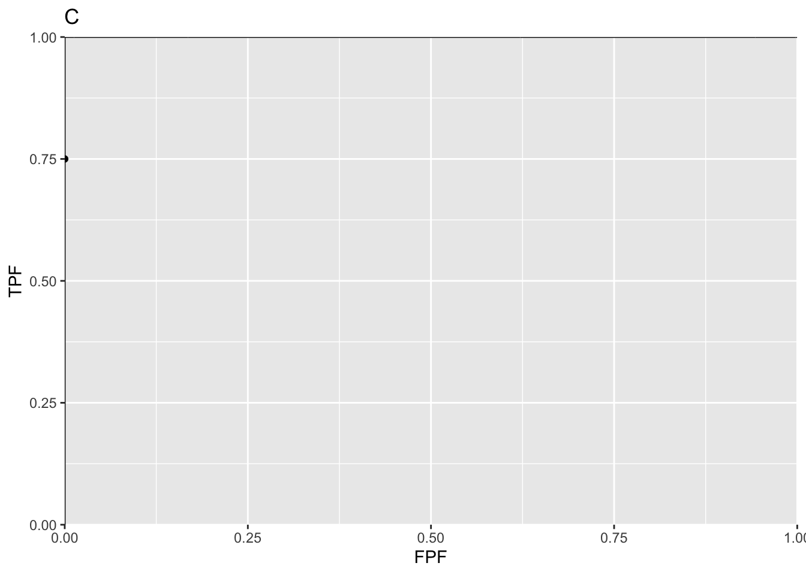
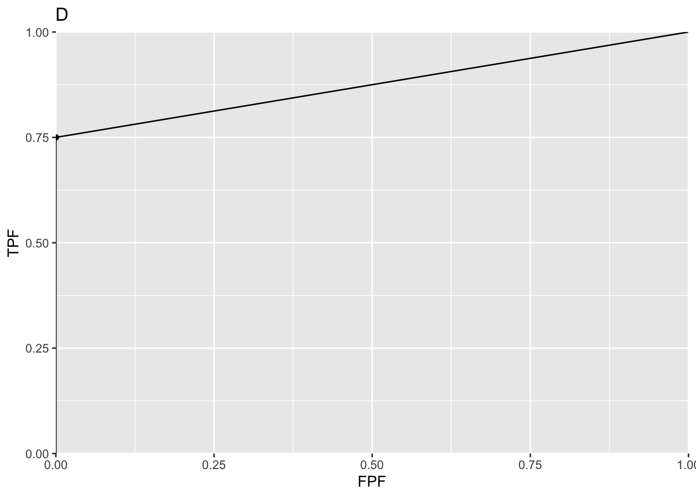

Chapter 19 Degenerate ROC curves
19.2 Degenerate datasets
Metz defined binormal degenerate data sets as those that result in exact-fit binormal ROC curves of inappropriate shape consisting of a series of horizontal and/or vertical line segments in which the ROC “curve” crosses the chance line. The crossing of the chance line occurs because the degenerate data sets can be fitted exactly by infinite or zero values for the model slope parameter b, and infinite values for the decision thresholds, or both.
19.3 Understanding degenerate datasets
To understand this, consider that the non-diseased distribution is a Dirac delta function centered at zero (by definition such a function integrates to unity) and the unit variance diseased distribution is centered at 0.6744898. In other words this binormal model is characterized by a = 0.6744898 and b = 0. What is the expected ROC curve? As the threshold \(\zeta\) is moved from the far right, gradually to the left, TPF will increase but FPF is stuck at zero until the threshold reaches zero. Just before reaching this point, the coordinates of the ROC operating point are (0, 0.75). The 0.75 is due to the fact that z = 0 is -0.6744898 units relative to the center of the diseased distribution, so the area under the diseased distribution below z = 0 is 0.25. Since pnorm is the probability below the threshold, TPF must be its complement, namely 0.75. This explains the operating point (0,0.75), which lies on the y-axis. As the threshold crosses the zero-width delta function, FPF shoots up from 0 to 1, but TPF stays constant. Therefore, the operating point has jumped from (0, 0.75) to (1, 0.75). When the threshold is reduced further, the operating point moves up vertically, along the right side of the ROC plot, until the threshold is so small that virtually all of diseased distribution exceeds it and the operating point reaches (1, 1). The ROC curve is illustrated in plot A.
plotOP <- data.frame(FPF = 0, TPF = 0.75)
a <- 0.6744898; b <- 0
plotCurve <- BMPoints(a, b)
figA <- ggplot(mapping = aes(x = FPF, y = TPF)) +
geom_line(data = plotCurve) +
geom_point(data = plotOP) +
scale_x_continuous(expand = c(0, 0)) +
scale_y_continuous(expand = c(0, 0)) +
ggtitle("A")
print(figA)
This is an extreme example of an ROC curve with a “hook”. If the data is such that the only operating point provided by the observer is (0,0.75) then this curve will be an exact fit to the operating point.
19.4 The exact fit is not unique
Actually, given one operating point (0, 0.75) the preceding fit is not even unique. If the diseased distribution is shifted appropriately to the right of its previous position, and one can determine the necessary value of a, then the ROC curve will shoot upwards through the operating point (0, 0.75) to (0, 0.9), as in plot B, before proceeding horizontally to (1, 0.9) and then completing the curve to (1, 1). If the diseased distribution is shifted well to the right, i.e., a is very large, then the ROC curve will shoot upwards past the operating point, as in plot C, all the way to (0,1) before proceeding horizontally to (1, 1).
a <- 1.281552; b <- 0
plotCurve <- BMPoints(a, b)
figB <- ggplot(mapping = aes(x = FPF, y = TPF)) +
geom_line(data = plotCurve) +
geom_point(data = plotOP) +
scale_x_continuous(expand = c(0, 0)) +
scale_y_continuous(expand = c(0, 0)) +
ggtitle("B")
a <- Inf; b <- 0
plotCurve <- BMPoints(a, b)
figC <- ggplot(mapping = aes(x = FPF, y = TPF)) +
geom_line(data = plotCurve) +
geom_point(data = plotOP) +
scale_x_continuous(expand = c(0, 0)) +
scale_y_continuous(expand = c(0, 0)) +
ggtitle("C")
print(figB);print(figC) 

All of these represent exact fits to the observed operating point, with b = 0 and different values of a. Not one of them is reasonable.
19.6 A reasonable fit to the degenerate dataset
If the dataset yields a single operating point (0, 0.75), what is a reasonable ROC plot? There is a theorem that given an observed operating point, the line connecting that point to (1, 1) represents a lower bound on achievable performance by the observer. The observer using a guessing mechanism to classify the remaining cases achieves the lower bound. Here is an explanation of this theorem. Having rated the 75 easy diseased cases as fives, the observer is left with 25 diseased cases and 100 non-diseased cases, all of which appear definitely non-diseased to the observer. Suppose the observer randomly rates 20% of the remaining cases as fours. This would pick up five of the actually diseased cases and 20 non-diseased ones. Therefore, the total number of diseased cases rated four or higher is 80, and the corresponding number of non-diseased cases is 20. The new operating point of the observer is (0.20, 0.80). Now, one has two operating points, the original one on the y-axis at (0, 0.75) and an interior point (0.20, 0.80). Next, instead of randomly rating 20% of the remaining cases as fours, the observer rates 40% of them as fours, then the interior point would have been (0.40, 0.85). The reader can appreciate that simply by increasing the fraction of remaining cases that are randomly rated fours, the observer can move the operating point along the straight line connecting (0, 0.75) and (1, 1), as in plot D. Since a guessing mechanism is being used, this must represent a lower bound on performance. The resulting ROC curve is proper and the net AUC = 0.875.
mu <- Inf; alpha <- 0.75
plotCurve <- CBMPoints(mu, alpha)
figD <- ggplot(mapping = aes(x = FPF, y = TPF)) +
geom_line(data = plotCurve) +
geom_point(data = plotOP) +
scale_x_continuous(expand = c(0, 0)) +
scale_y_continuous(expand = c(0, 0)) +
ggtitle("D")
print(figD)
For this dataset this is in fact the fit yielded by the contaminated binormal model (CBM) and the radiological search model (RSM). Why should one select the lowest possible performance consistent with the data? Because it yields a unique value for performance: any higher performance would not be unique.
19.5 Comments on degeneracy
Degeneracy occurs if the observer does not provide any interior operating points. So why worry about it? Perhaps one has a non-cooperating observer, who is not heeding the instructions to spread the ratings, use all the bins. A simple example shows that the observer could if fact be cooperating fully and is still unable to provide any interior data points. Consider 100 diseased cases consisting of 75 easy cases and 25 difficult ones and 100 easy non-diseased cases. The observer is expected to rate the 75 easy diseased cases as fives, the difficult ones as ones and the 100 non-diseased cases are rated ones. No amount of coaxing please, please spread your ratings is going to convince this observer to rate with twos, threes and fours any of the 75 easy diseased cases. If the cases are obviously diseased, and that is what is meant by easy cases, they are supposed to be rated fives: definitely diseased. Forcing them to rate some of them as probably diseased or possibly diseased would be irrational and guilty of bending the reading paradigm to fit the convenience of the researcher (early in his research career, the author used to believe in the existence of non-cooperating observers, so Metz’s advice to spread the ratings did not seem unreasonable at that time).